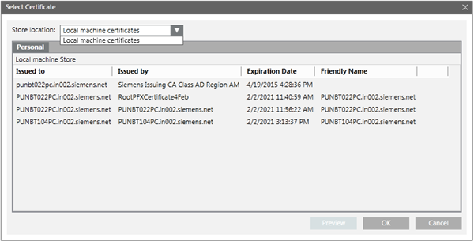
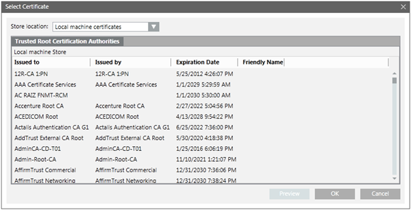
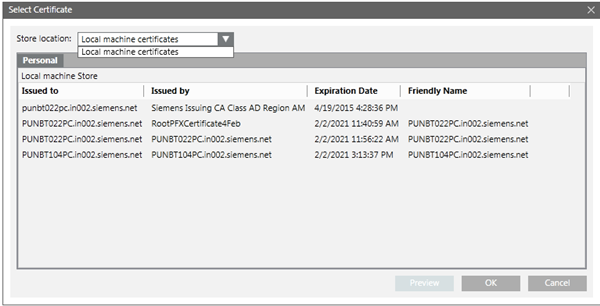
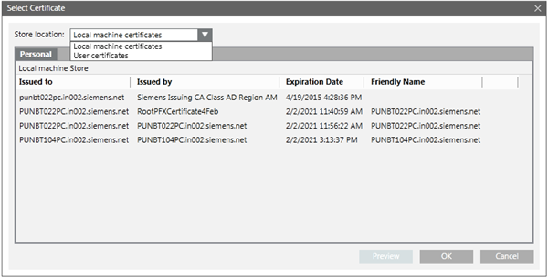

Select Certificate Dialog Box
The Select Certificate dialog box lists all available certificates for the selected store. It allows you to select a certificate that you have previously imported into the Windows Certificate store.
You can also select the store location from the available stores. It lists all the certificates available in the selected store. You can preview the certificate details by clicking Preview.
The Select Certificate dialog box consists of the following elements.
Select Certificate Dialog Box | |
Name | Description |
Store Location | Allows you to select a certificate store from the list of available certificate stores. |
Personal Tab/Trusted Certification Root Authorities Tab | Displays the logical stores. If no certificate is available for a specific logical store, the tab is not displayed. Allows you to select a certificate from the list of available certificates. |
Issued to | Displays the Issued to value for all listed certificates. |
Issued by | Displays the Issued by value for all listed certificates. |
Expiration Date | Displays the expiration date for all the listed certificates. Make sure that the certificate you select is not expired. |
Friendly Name | Displays the friendly name for all the listed certificates. |
OK | Closes the dialog box. If a certificate was selected, it is added to the Host certificate field of the CommunicationSecurity expander of the Project Settings tab. |
Cancel | Closes the dialog box. |
Preview | Clicking this button displays the details of the selected certificate, such as the private key for a host certificate, or the root of a host certificate. |
Tips for Selecting a Certificate for Web Server Communication (CCom port)
- To secure the Web server communication you can only use a host certificate or a self-signed certificate available in the Personal store of the Local machine certificates store of the Windows Certificate store.
- The default certificate used for securing the Web server communication is the host certificate, which is set as default certificate. However, you can modify this to select another host/self-signed certificate available in the in the Personal store of the Local machine certificates store of the Windows Certificate store.
- The certificate (host/self-signed) must have a private key and be marked as exportable. The host certificate (along with its private key, which is marked as exportable) or the self-signed certificate must be imported in the Personal store of the Local machine certificates store of the Windows Certificate store and set as default.
- This certificate will be used to secure the communication between the local/remote web server (IIS) and the CCom port on the Desigo CC server.
- The certificate used for securing a Web communication must be issued to the full computer name of the Desigo CC server, short name or an IPv4 IP address.
- For example, it can be ABCXY022PC.dom01.company.net. Note that the Issued To field of such a certificate will be a full computer name.
- It can also be a wildcard certificate issued to the full computer name, for example, *.dom01.company.net.
- It can also be a multi-host certificate, but it must contain the host name of the Desigo CC Server in the Subject Alternative Names property of the certificate.
- If the web server (IIS) is installed on the same computer as the Desigo CC server hosting the CCom port then you must ensure that the root of the host certificate configured for secure web communication is available in the Trusted Root Certification Authorities store of the Windows Certificate store on the server.
- If the web server (IIS) is installed on a different computer than the Desigo CC server, and the server project secures the web communication using:
- a host certificate, then the root certificate of the host certificate must be available in the Trusted Root Certification Authorities store of the Windows Certificate store of the web server (IIS) computer.
- a self-signed certificate, that self-signed certificate must be available in the Trusted Root Certification Authorities and Personal store of the Windows Certificate store of the web server (IIS) computer.

Tips for Selecting a Certificate for Client/Server Communication
- To secure the communication between a server project and the client connecting to the server project during the Client/Server setup, you can either used certificates from Windows store or File (.pem) based certificates.
- Once created using SMC, the File (.pem) based certificates, root, host, and host key are available on the disk for further use during project modification.
- You need to import the Windows store certificates in the appropriate Windows Certificate stores for further use during project modification.
- The root certificate must be imported in the Trusted Root Certification Authorities of the Local machine certificates store of the Windows Certificate store and set as default.
- The host certificate (along with its private key, which is marked as exportable) must be imported in the Personal store of the Local machine certificates store of the Windows Certificate store and set as default.
- Ensure that the host certificate is created using the root certificate provided.
- The host certificate must contain a private key that should be marked as exportable.
- On a client/FEP station, the user who will launch the Desigo CC client application must have Read rights on the host certificate. You can do this using SMC, when creating/modifying a Client/FEP project.

Tips for Selecting a Certificate for a Web Site
Select a host/self-signed certificate from the Personal tab — Local machine certificate Store location drop-down list for securing the web site.
- If you select a host certificate for a web site, the root certificate of the selected host certificate must be available in the Trusted Root Certification Authorities store of the machine where you are launching the Windows App client.
- If you use the self-signed certificate, the same certificate must be available in the Trusted Root Certification Authorities store of the machine where you are launching the Windows App client.
- If the certificates used for web site and web application are different, you must manually install the web site certificate in the Trusted Root Certification Authorities store on the machine where you are launching the Windows App client.
- Ensure that the certificate selected is issued for the host name provided in the Host name field.
- Example 1: If the host name is ABCXY022PC.dom01.company.net, and you want to use a wildcard certificate in the Certificate Issued To field, it must be in the format *.dom01.company.net.
- Example 2: If you use a multi-host certificate, the certificate name can be anything, but its Subject Alternative Names must contain the host name provided in the Host name field.
- Example 3: If you use SMC-created host or self-signed certificate, the Subject name (issued to) of the certificate should be the same as the host name provided in the Host name field.

Tips for Selecting a Certificate for a Web Application
The website and the web application certificate can be different. You must ensure that, in addition to the website certificate, the web application certificate must also be available in the Trusted Root Certification Authorities of the Windows Certificate store.
Select a host/self-signed certificate having key as exportable from the Personal tab — Local machine certificate/User certificates from the Store location drop-down list for securing the web application.
- If you select a host certificate for a web application, the root certificate of the selected host certificate and the host certificate must be available in the Trusted Root Certification Authorities store (TRCA) of the Windows Certificate store of the machine where you are launching the Windows App client.
- If you use the self-signed certificate, the same certificate must be available in the Trusted Root Certification Authorities store (TRCA) of the machine where you are launching the Windows App client.
- To simplify the configuration of certificates, on the computer where you launch the Windows App client, you should use the same certificates (preferably self-signed) for both securing a web site and signing the web application.
